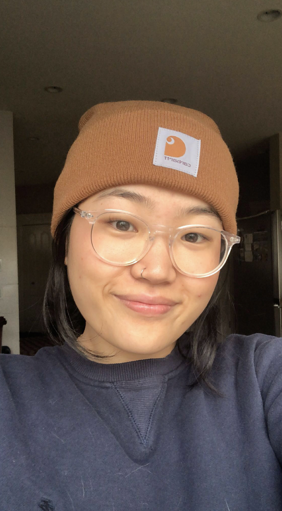
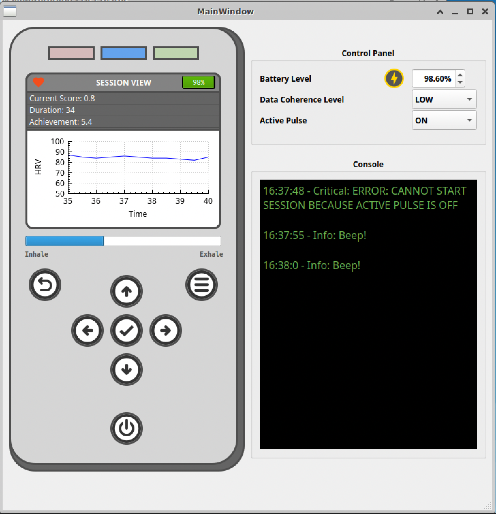
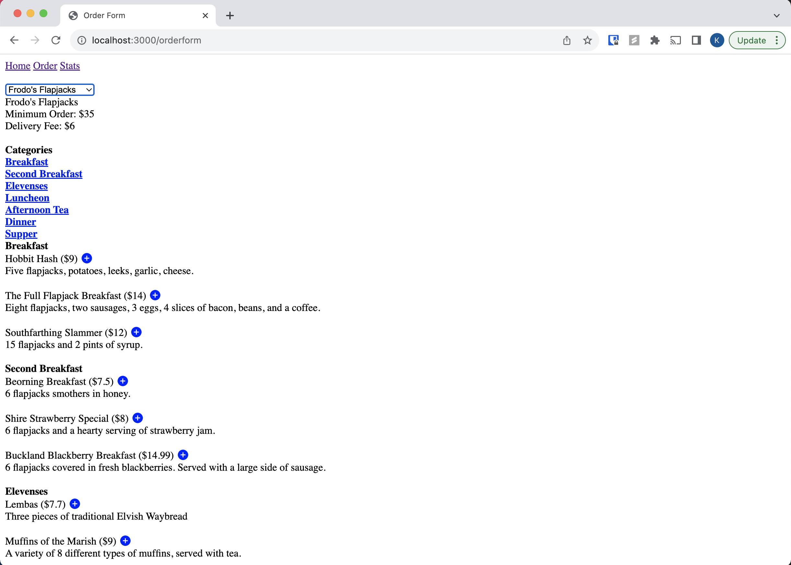
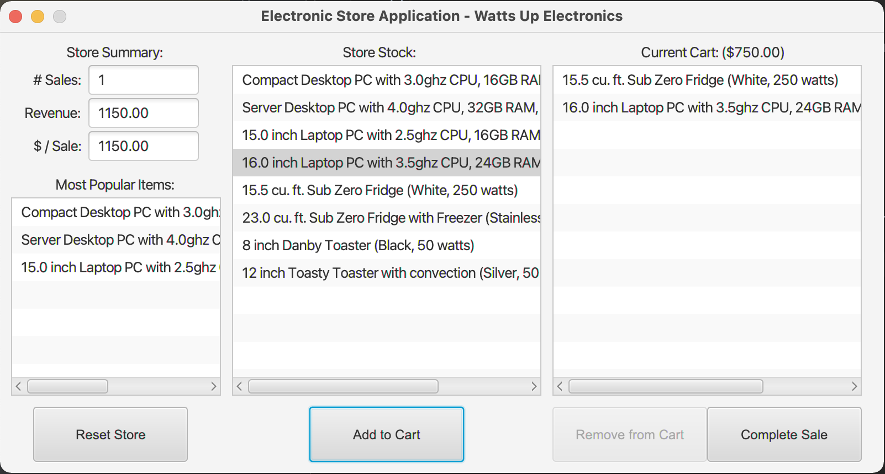

Back in 2019, I stumbled upon a UI design workshop as a curious graphic designer and fell into the fascinating world of web development. Fast-forward to today, I'm in my 4th year of pursuing a Computer Science degree at Carleton University and have had the privilege of interning at Warner Bros. Discovery and Canada Energy Regulator. My interests have gravitated towards API and backend development, reflected in my personal projects where I tackle new challenges to grow as a developer.
Beyond coding, I'm a culinary adventurer, avid podcast listener, and aspiring guitarist. Read more about my tech journey below, connect with me on LinkedIn, or check out my projects on GitHub :)



